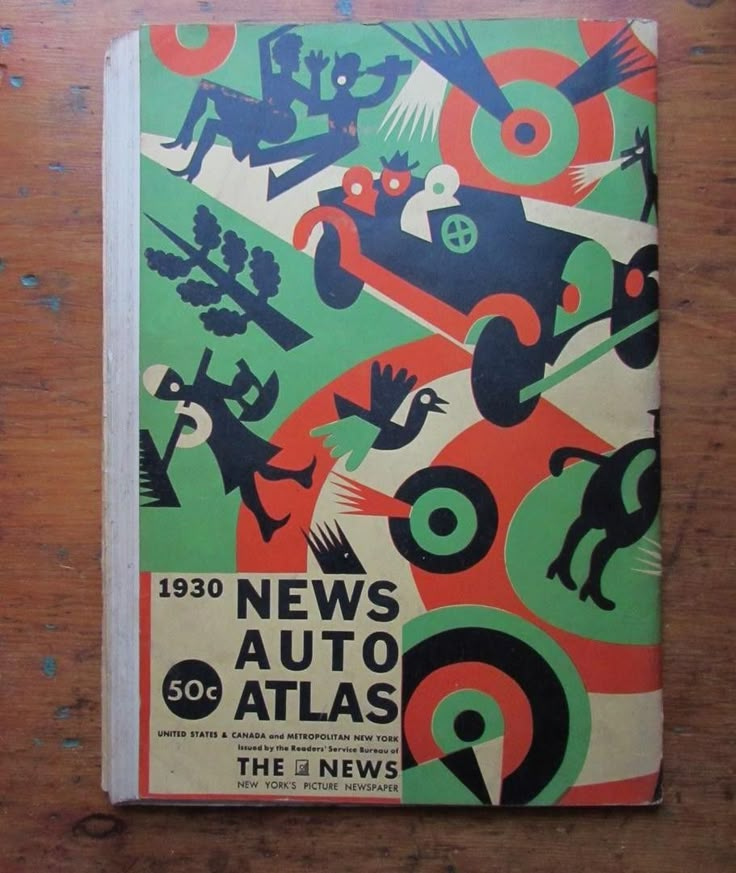
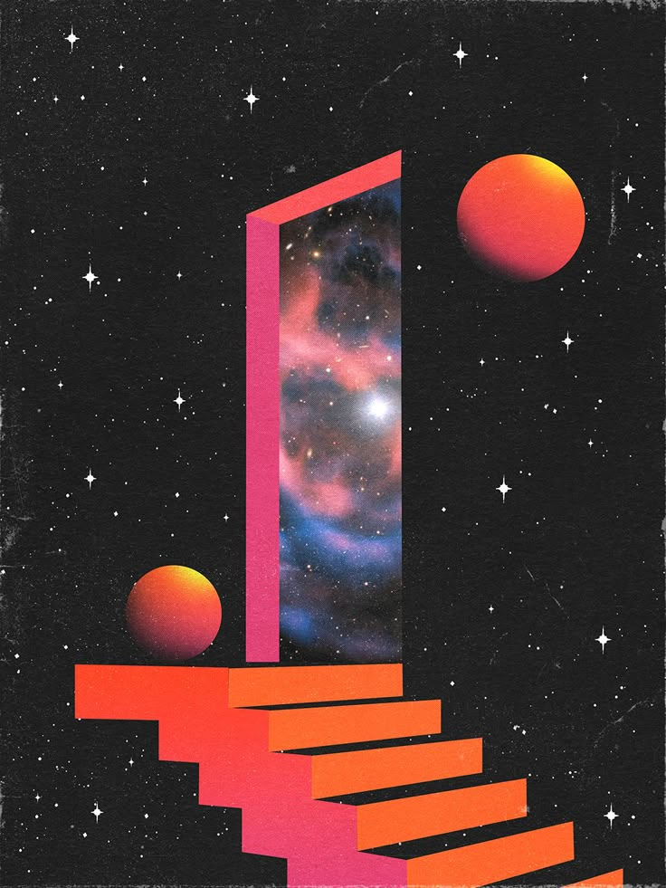

Documentation
Welcome to the GastroLit Documentation. This page provides information on the project's themes, design choices, and how they influence the user experience.
Theme Design Philosophy
GastroLit offers four distinct themes, each crafted to immerse users in a peculiar visual experience. These themes are more than just aesthetic variations: they transform the way content is perceived, enhancing the storytelling and cultural depth of the project. Designed to follow a chronological progression, the themes guide users through different historical and stylistic periods. Manuscripta evokes the rich textures of medieval manuscripts, Futurism embraces the bold typographic innovations of the early 20th century avant-garde, Cyberpunk channels the neon-drenched digital aesthetics of the 1980s and Futuristic envisions a sleek, high-tech design inspired by speculative sci-fi worlds. Each theme invites users to explore Italian literary gastronomy through a curated stylistic lens, connecting past, present, and imagined futures.
Manuscripta: A Manuscript-Inspired Design
Step into the world of illuminated manuscripts with the Manuscripta theme, where ancient calligraphy and parchment textures come together to recreate the essence of historical literary craftsmanship. Inspired by the aged elegance of medieval scriptoriums, this theme transports you to a time when scribes meticulously transcribed knowledge onto richly decorated scrolls and codices.

Typography & Fonts
- Uses "Metamorphous" as the primary font, replicating historical script.
- Additional fonts include "Uncial Antiqua" and "Cinzel Decorative" to enhance the medieval aesthetic.
- Font sizes are intentionally large to improve readability, mimicking old handwritten manuscripts.
- The drop-cap effect reproduces the large illuminated letters seen in ancient codices.
Color Scheme & Background
- The background features a parchment-like texture (
textured-paper.png) with a warm, aged-paper tone (#fae4be). - Text color is a deep brown ink tone (
#3a302a), mimicking medieval handwritten text. - Borders and highlights incorporate earthy hues like deep browns and warm golds.
Navbar & UI Components
- The navbar has a double-lined deep brown border to resemble scroll decorations.
- Dropdown menus use a parchment-like background with handwritten-style serif fonts.
- Navigation links change color to a golden hue when hovered, reinforcing the ancient aesthetic.
Buttons and Interactive Elements
- Buttons have a parchment-like background with slightly faded tones, creating the illusion of antique paper.
- Interactive elements have a slightly aged paper effect when hovered.
Interactive Features
- Pop-ups have a parchment-colored background with handwritten-style fonts, mimicking scribal annotations found in ancient codices.
Theme Selector & Branding
- theme selector is styled like a medieval manuscript annotation, with wooden ink lettering
- The GastroLit logo, prominently displayed as a woodcut-style emblem, is integrated into the parchment-like texture, reinforcing the historical and artisanal quality of the theme.
Futurism: A Dynamic and Forward-Thinking Design
Step into a world of speed, innovation, and bold geometric aesthetics with the Futurism theme. Inspired by the energy of the early 20th-century Futurist movement and modern digital interfaces, this theme embraces sharp angles, kinetic typography, and high-contrast colors to create a sleek and immersive user experience. Futurism is designed for those who appreciate progress, dynamism, and a break from tradition.
Typography & Fonts
- Uses "Oswald" as the primary font, with its strong, condensed letterforms that convey power and energy.
- Additional fonts include "Righteous" and "Staatliches" adding a bold, industrial, and modernist feel.
- Typography is uppercase, slightly slanted, and bold, enhancing the sense of speed and urgency.
- The drop-cap effect in key sections emphasizes dramatic visual impact.
Color Scheme & Background
- The background features a warm, sand-like hue (
#e7d8b0) evoking a retro-futuristic aesthetic that blends vintage and modern design. - The primary text color is deep black (
#000), ensuring strong contrast and readability, remembering the timeless allure of the early 20th-century Futurist magazines. - Accent colors include: Bold red (
#b41919) for highlights and key UI elements, reinforcing a sense of dynamism; Deep indigo (#4f3ac5) used in specific design elements for striking, futuristic contrast.
Navbar & UI Components
- The navbar features a warm beige background (
#e7d8b0) with bold black text and structured red accents (#b41919), creating a contrast between a vintage-inspired base and a modern, striking layout. - The navbar brand text uses the "Righteous" font, emphasizing a strong, uppercase, and futuristic look, with a subtle overline effect for added distinction.
- Dropdown menus have a flat, structured design, using Staatliches font and maintaining the same beige background with high-contrast black text.
Buttons & Interactive Elements
- Interactive elements and buttons feature double-bordered designs, enhancing the bold, structured aesthetic.
- Hover effects invert the colors, switching to a beige background with black text and borders, creating an interactive, responsive feel.
- Animations include subtle scaling, rotation, and transitions, adding a smooth but energetic effect when interacting with the interface.
Maps & Interactive Features
-
The interactive components of the Futurism theme draw inspiration from the dynamic layouts and bold typography of early 20th-century Futurist publications. Much like the fragmented and energetic compositions of avant-garde newspapers and manifestos, the design embraces movement, asymmetry, and layered elements that create a sense of urgency and speed.
Maps and UI components are not static but designed to evoke motion and transformation, reminiscent of how Futurist magazines and posters rejected rigid structures in favor of experimental arrangements. Hover effects, transitions, and animations are crafted to provide a sense of rapid interaction, reinforcing the theme’s dynamic character.
Theme Selector & Branding
- The theme selector functions as a bold statement, much like the striking headlines and unconventional layouts of Futurist journals. It defies traditional positioning, standing out with strong, angular typography and assertive placement, ensuring immediate interaction. Just as Futurist texts played with varying sizes, orientations, and spacing, the selector is designed to be visually engaging, encouraging exploration through its structured yet expressive design.
- Branding within the Futurism theme embraces the spirit of innovation and modernity, much like the radical visual language of early 20th-century experimental design. Logos, headers, and titles are designed to be bold and uncompromising, mirroring the forward-thinking philosophy of Futurist art and media. The use of structured yet fluid elements reflects the constant evolution of technology and progress, reinforcing a sense of movement and transformation throughout the user experience.
Cyberpunk Theme: Neon & High-Tech Aesthetics
The Cyberpunk theme transforms the interface into a dystopian, neon-infused experience. Designed with vibrant neon glows, stark contrasts, and sleek digital typography, this interface pulsates with the energy of a futuristic metropolis. Every element is infused with hyper-stylized luminescence, evoking the holographic billboards and electrified cityscapes of a cybernetic future scenario. Immerse yourself in the postmodern digital realm where neon lights cut through the darkness and technology shapes the landscape.

Typography & Fonts
- Uses "Orbitron" as the primary font, giving a sharp, digital display look.
- Additional use of "Share Tech Mono" for monospace elements, enhancing the hacker aesthetic.
- Font sizes are medium-large, ensuring readability against neon-lit backgrounds.
Color Scheme & Background
- The background is a deep black (
#0d0d0d) to maximize neon contrast. - Primary colors: Neon cyan (
#00ffcc), Hot pink (#ff0080), and Vibrant yellow (#ffbf00). - Gradients and shadows create a glowing, holographic effect.
Navbar & UI Components
- The navbar has a neon gradient background blending cyan and pink.
- Navigation links glow dynamically using text shadows to mimic holographic projections.
- Dropdown menus have black backgrounds with neon borders, resembling futuristic UI panels.
Buttons & Interactive Elements
- Buttons resemble high-tech control panels with glowing neon borders.
- Hover effects amplify the glow, making interactions feel responsive and immersive.
Interactive Features
- Pop-ups have high-contrast dark backgrounds with neon-colored text.
Theme Selector & Branding
- The theme selector is designed like a cyber interface with animated text glows and neon highlights.
- The GastroLit logo is here disposed as a general immersive background.
Horizon: A Neon-Lit Vision of the Future
Step into the Horizon theme, a digital utopia inspired by cybernetic aesthetics, neon-infused landscapes, and the sleek sophistication of the retro-futuristic vision. Blending bold monospace typography, radiant glows, and high-tech gradients, this theme is designed for those who embrace the synergy of technology and art. Horizon delivers an immersive experience, reflecting the boundless possibilities of the digital frontier.
Typography & Fonts
- The primary font is "Unica One", a sleek, futuristic sans-serif with a unique digital aesthetic.
- "Space Mono" serves as a secondary font, bringing a structured, cyberpunk-inspired look to code blocks, UI elements, and labels.
- "Silkscreen"enhances the theme with its pixelated, retro-digital vibe, giving buttons and small text an 8-bit aesthetic.
- Typography is uppercase, with slight slanting for dynamic energy.
- A subtle glow effect on headings intensifies the sci-fi atmosphere.
Color Scheme & Background
- The background is a deep midnight blue (
#000611), creating a digital void that enhances the neon accents. - A radial gradient (
#02101f, #bc7e48, #050a30) simulates a neon glow effect, adding depth and futuristic ambiance. - Primary text color: Light cyan (
#e0ffff), providing high contrast against the dark backdrop. - Accent colors: Neon magenta (
#9f1882) for key UI elements and interactivr components; Cyberpunk cyan (#00ffff) to emphasize buttons and hover states; Warm bronze (#bc7e48)
Navbar & UI Components
- The navbar is transparent, with a glassmorphism effect (
backdrop-filter: blur(20px)), resembling futuristic holographic panels. - Box-shadow glows (
rgba(0, 255, 255, 0.6)) create a floating, high-tech illusion. - The navbar brand uses "Righteous" in an oversized, glowing magenta font, reinforcing the cybernetic branding.
- Dropdown menus feature dashed neon borders, maintaining the sleek, digital interface.
Buttons & Interactive Elements
- Buttons feature double-bordered designs, inspired by classic arcade interfaces.
- Hover effects include: Color inversion, switching to a beige background with black text; Subtle scaling and rotation, enhancing the interactive feel; Subtle scaling and rotation, enhancing the interactive feel.
- Animations use smooth transitions to add a futuristic flow to user interactions.
Maps & Interactive Features
- Maps are framed with glowing neon borders, mimicking sci-fi screen interfaces.
- Pop-ups have high-contrast dark backgrounds with neon-colored text.
Theme Selector & Branding
- The theme selector is styled to resemble a futuristic terminal, using pixelated typography and neon highlights.
- The placement and interaction mimic the heads-up displays (HUDs) found in sci-fi UI designs.
- Branding elements, including logos, headers, and animations, evoke the feeling of a high-tech network, aligning with the forward-thinking philosophy of Horizon.
- Structured yet fluid, the Horizon theme embodies the pulse of technological advancement, innovation, and exploration.
Themes comparison
| Feature | Manuscripta | Futurism | Cyberpunk | Horizon |
|---|---|---|---|---|
| Font Style | Medieval serif & calligraphy | Bold, condensed sans-serif | Digital sans-serif & monospace | Sleek futuristic sans-serif |
| Color Palette | Earthy browns, parchment, golds | Beige, deep black, bold red | Neon cyan, hot pink, deep black | Deep midnight blue, neon magenta, cyan |
| Navbar Design | Parchment-textured, brown borders | Beige background, structured red accents | Neon gradient, glowing text | Glassmorphism with glowing neon elements |
| Interactive Elements | Hand-drawn buttons, parchment texture | Structured buttons, strong geometric contrasts | Glowing buttons, neon highlights | Cyber-style buttons, high-tech animations |
| Overall Experience | Feels like reading an ancient manuscript | Feels like a bold modernist design | Feels like using a cyberpunk interface | Feels like an advanced sci-fi HUD |
Each theme provide a unique visual journey, allowing users to experience GastroLit in contrasting historical and futuristic settings.